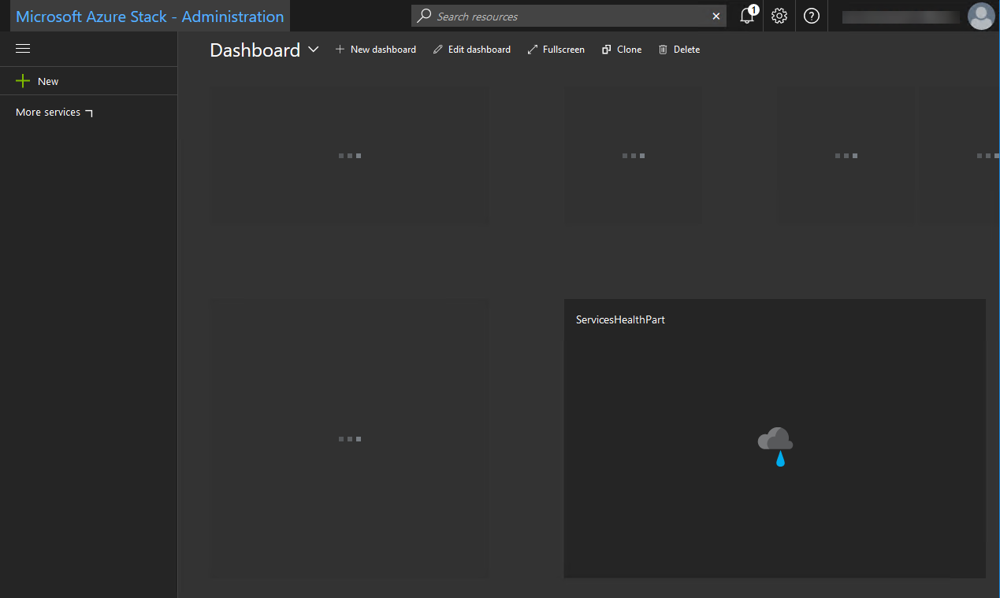
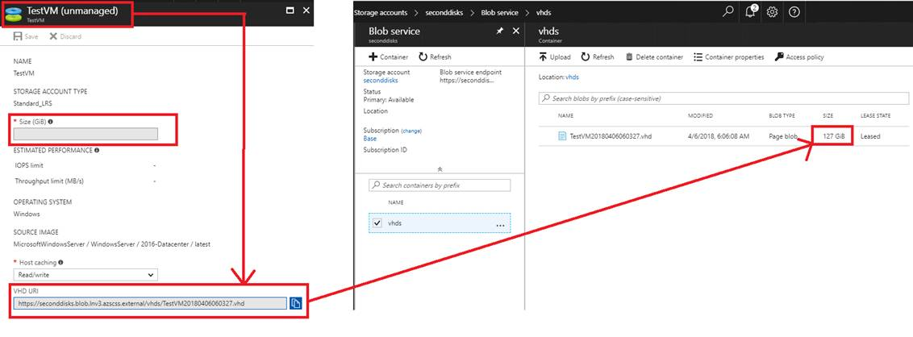

UKCloud for Microsoft Azure Troubleshooting
Overview
This guide describes some of the issues you may encounter when using UKCloud for Microsoft Azure:
Login results in server error
Cause
When first logging in to the Azure Stack portal, you may see the following error:
Server Error in '/' Application.

Solution
Refresh the page and the login should work.
Azure Stack portal does not show any resources
Cause
If your firewall ports are not open to enable outbound communication with Azure Stack, your Azure Stack portal will not show any resources.

Solution
In your firewall, ensure that the appropriate ports are open for communication, as listed in Portal (user) row of the Ports and protocols (inbound) table in the following article: https://docs.microsoft.com/en-us/azure/azure-stack/azure-stack-integrate-endpoints#ports-and-protocols-inbound
Diagnostics do not work for Linux VMs
Cause
If you enable Microsoft Insights for your subscription (Subscriptions > Resource providers > Microsoft.Insights and subscribe), you'll have access to Azure Monitoring for Windows VMs only. This feature is not yet available for Linux VMs as documented at: https://docs.microsoft.com/en-gb/azure/azure-stack/azure-stack-update-1802
Solution
There is currently no workaround for this issue.
Virtual machine disk size is not showing in the GUI or CLI
Cause
You cannot see the virtual machine disk size in the GUI or CLI.
Solution
To view your disk size, navigate to Storage accounts > <storage_account_name> > Blob service > vhds and find your disk there:

Feedback
If you have any comments on this document or any other aspect of your UKCloud experience, send them to products@ukcloud.com.